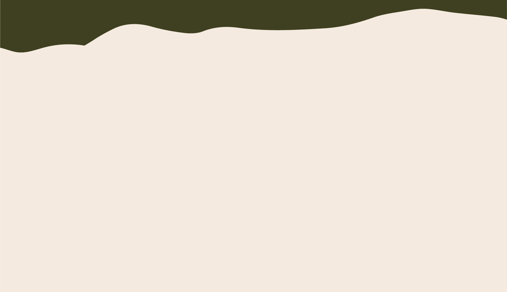

Tu aventura en Vaquerías te espera
Disfrutá de caminatas, talleres y actividades únicas que te acercarán a su flora, fauna y la historia que la rodea. Conocé este santuario natural y sumate a la protección de su biodiversidad. ¡Tu experiencia en la Vaquería te espera!
VIVI LA EXPERIENCIA